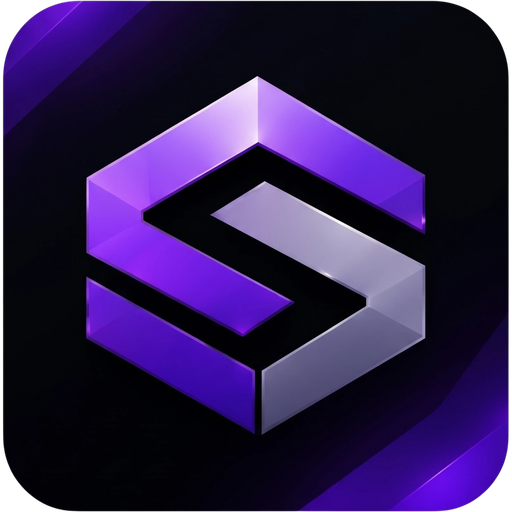

Identidad visual, voz y reglas del producto
Este manual reemplaza a toda la identidad anterior. Lo que antes se llamaba Horus pasó a llamarse SG Black y esa marca ya no se usa en ningún material.
Una plataforma web para que las pymes argentinas lleven al día las horas, la asistencia y las licencias de su gente, y le pasen al contador la información lista para liquidar.
Maneja datos de sueldos y salud: cuida lo que muestra y a quién.
Dice lo que pasa y lo que sigue, sin tecnicismos.
Habla en rioplatense, de vos, como una persona del equipo.
Negro, violeta y plata. Sin adornos que distraigan.
SG Black
SGBlack · Sg Black · sg black · SG-Black · SG BLACK* · Horus
* Todo en mayúscula solo se admite como estilo tipográfico en etiquetas chicas (por ejemplo, el pie de la barra lateral).
SG Black es la plataforma. Cada empresa cliente usa la app con su propio nombre, logo y colores. Cuando hay que nombrar los dos:
| Dónde | Qué se ve |
|---|---|
| Dentro de la app de un cliente | El nombre y el logo del cliente. SG Black aparece solo al pie del menú lateral: Powered by SG Black. |
| Pantalla de entrada y consola del Configurador | Siempre SG Black, en modo oscuro, aunque cada persona haya elegido modo claro. |
| Planillas y archivos que se descargan | Nombre de archivo sgblack-…; adentro, el nombre de la empresa cliente. |
| Comunicación comercial | SG Black, con el logotipo horizontal. |
Horus se retiró porque hay marcas parecidas registradas que podían entrar en conflicto. No se usa en pantallas, archivos, documentos ni
código visible. Lo único que conserva el nombre viejo es el identificador técnico del proyecto de Firebase de la demo
(horus-demo-929b0), que no se puede cambiar y no lo ve ningún usuario.
El isotipo es una S formada por cintas que se pliegan en un hexágono: orden, estructura y un recorrido continuo. El logotipo lo acompaña con «SG Black». Las piezas son dibujos propios: no se reescriben con ninguna tipografía.
Logotipo horizontal · sobre fondo oscuro (texto blanco). Es la versión principal.
Logotipo horizontal · sobre fondo claro (texto casi negro).

Isotipo / ícono de la app · el glifo dentro de su cuadrado redondeado. Para favicon, ícono de celular, avatar.
Glifo solo (sin cuadrado, transparente) para usar chico sobre cualquier fondo, y panel horizontal completo para banners.
| Fondo | Pieza | Archivo |
|---|---|---|
| Negro u oscuro | Logotipo horizontal con texto blanco | sgblack-logo-on-dark.png |
| Blanco o claro | Logotipo horizontal con texto casi negro | sgblack-logo-on-light.png |
| Espacio cuadrado (avatar, ícono) | Isotipo en su cuadrado | sgblack-isotipo.png (1024) y -512, -192 |
| Espacio muy chico o sobre cualquier fondo | Glifo solo | sgblack-glyph.png |
| Banner o presentación | Panel horizontal completo | sgblack-logo-horizontal.png |
Zona de respeto: alrededor de la pieza, un espacio libre igual a la mitad de la altura del isotipo. Nada de texto, bordes ni imágenes invade esa zona.
| Pieza | Mínimo |
|---|---|
| Logotipo horizontal | 120 px · 30 mm |
| Isotipo en cuadrado | 16 px · 6 mm |
| Glifo solo | 14 px · 5 mm |
Por debajo del mínimo, se pasa a una pieza más simple (del logotipo al isotipo, del isotipo al glifo).
No deformar ni estirar.
No rotar ni inclinar.
No cambiar los colores.
No usar sobre fondos de color o fotos sin contraste.
No usar la versión de fondo oscuro sobre blanco: el texto casi no se ve.
No usar la versión de fondo claro sobre negro.
No agregar sombras, brillos ni contornos.
No rearmar el logotipo con otra tipografía.
| Uso | Archivo | Tamaño |
|---|---|---|
| Pestaña del navegador | favicon.ico · favicon-16.png · favicon-32.png · favicon-48.png | 16 · 32 · 48 |
| Ícono de iPhone / iPad | sgblack-apple-touch-icon.png (fondo opaco) | 180 |
| Ícono adaptable de Android | sgblack-isotipo-maskable-512.png (con margen de seguridad) | 512 |
| Avatar, redes, ícono general | sgblack-isotipo-512.png · -192.png · sgblack-isotipo.png | 512 · 192 · 1024 |
Los archivos se generan a partir de dos originales con python3 scripts/brand-assets.py; ver la sección 12.
Negro violáceo, violeta y plata lavanda. Los colores salen del isotipo; no se inventan otros.
Fondo de la marca: entrada, consola del Configurador, portadas y el fondo del logotipo. No es negro puro: lleva un toque de violeta.
Color principal. Botones, ítem activo del menú, enlaces, acentos. Es el color que cada cliente puede reemplazar por el suyo.
Segundo color: degradados, estados presionados y fondos de énfasis.
Sombras de color y fondos muy cargados.
Texto de acento sobre fondo oscuro y brillos. Es lo que se usa cuando el violeta SG no alcanza de contraste.
Texto secundario, bordes y detalles metálicos del isotipo.
Texto sobre violeta y sobre negro; tarjetas en modo claro.
* CMYK aproximado, calculado por conversión simple desde RGB. Para impresión, pedir prueba de color a la imprenta y ajustar contra el original en pantalla.
En pantalla, la mayor parte es neutro (fondos y texto). El violeta se reserva para lo que se puede tocar o lo que importa: un botón, el ítem activo, un aviso. Si todo es violeta, nada destaca.
Degradé de marca: violeta intenso → profundo → violeta → claro, a 135°. Es el que sugiere el brillo del isotipo; se usa en portadas y banners, nunca como fondo de texto largo.
| Token | Oscuro | Claro | Uso |
|---|---|---|---|
background / surface | #0B0914 | #F4F2FB | Fondo de la app |
surface-container-lowest | #07060F | #F7F5FD | Campos de formulario |
surface-container-low | #120F1D | #FFFFFF | Tarjetas y paneles |
surface-container | #181426 | #EFECF8 | Bloques dentro de una tarjeta |
surface-container-high | #221D33 | #E6E2F3 | Botones secundarios, filas con foco |
surface-container-highest | #2D2742 | #DCD7EC | Bordes fuertes, barras de scroll |
on-surface | #E9E6F5 | #17132B | Texto principal |
on-surface-variant | #B9B3D0 | #4D4768 | Texto secundario |
outline-variant | #3B3452 | #CBC5E0 | Divisores |
Siempre el mismo significado, en toda la app. El color nunca es lo único que informa: va con un texto o un ícono.
Modo oscuro
Modo claro
| Estado | Oscuro | Claro | Cuándo |
|---|---|---|---|
Éxito | #00D492 | #047857 | Aprobado, guardado, al día |
Atención | #FFD230 | #A16207 | Pendiente, por vencer, revisar |
Error / urgente | #FFB4AB | #B3261E | Falló, vencido, rechazado, ausencia sin justificar |
Información | #C28FF9 | #512696 | Datos neutros y avisos informativos (usa el color de marca) |
El mínimo para texto normal es 4,5:1. Estos son los pares que usa la marca:
| Par | Relación | Cumple | Regla | |
|---|---|---|---|---|
| Aa | Blanco sobre violeta SG | 5.4:1 | AA | Texto de botones principales |
| Aa | Blanco sobre violeta profundo | 7.4:1 | AA | |
| Aa | Violeta claro sobre negro SG | 8.2:1 | AA | Texto de acento sobre oscuro |
| Aa | Plata lavanda sobre negro SG | 8.5:1 | AA | Texto secundario sobre oscuro |
| Aa | Violeta SG sobre negro SG | 3.7:1 | solo texto grande y elementos de interfaz | No usar en texto chico sobre oscuro; sí en íconos y bordes |
| Aa | Violeta SG sobre blanco | 5.4:1 | AA | Aceptable para texto en modo claro |
| Aa | Texto principal sobre fondo claro | 16.3:1 | AA | |
| Aa | Texto secundario sobre blanco (modo claro) | 8.7:1 | AA | |
| Aa | Texto principal sobre fondo oscuro | 16.1:1 | AA | |
| Aa | Texto secundario sobre fondo oscuro | 9.8:1 | AA |
Títulos y cifras grandes · pesos 600, 700 y 800.
Texto, tablas, formularios y etiquetas · pesos 400, 500, 600 y 700.
Las dos son gratuitas (Google Fonts). Si no cargan, el sistema usa la tipografía sans-serif del dispositivo. El logotipo no es una fuente: es un dibujo propio.
| Nombre | Tamaño / alto de línea | Peso | Ejemplo |
|---|---|---|---|
| headline-xl | 36 / 44 px | 700 | Resumen del mes |
| headline-lg | 28 / 36 px | 600 | Asistencia del equipo |
| headline-md | 22 / 30 px | 600 | Cargar horas de Emi |
| headline-sm | 18 / 26 px | 600 | Licencias pendientes |
| body-lg | 16 / 26 px | 400 | Texto destacado de una pantalla. |
| body-md | 14 / 22 px | 400 | Texto general de la app. |
| body-sm | 12 / 18 px | 400 | Ayudas, notas al pie y detalles. |
| label-lg / md | 14 y 12 px | 600 / 500 | Etiquetas de campos y botones |
| label-xs-mono | 11 px · espaciado .06em | 600 | Encabezados de tabla |
Material Symbols Outlined, trazo regular, siempre con un texto al lado o una etiqueta accesible. Tamaños: 16, 18, 20 y 24 px.
Cada pantalla tiene un ícono fijo en el menú (por ejemplo: how_to_reg para Mi asistencia, folder_open para Documentos, notifications para los avisos). No se cambian de una versión a otra.
Esquinas redondeadas: 12 px tarjetas, diálogos y botones grandes · 8 px campos y botones chicos · círculo avatares y etiquetas.
| Token | Valor | Uso |
|---|---|---|
space-xs | 4 px | Entre ícono y texto muy cercanos |
space-sm | 8 px | Entre elementos de una misma fila |
space-md | 16 px | Padding de tablas y bloques |
space-lg | 24 px | Padding de tarjetas, separación entre secciones |
space-xl | 36 px | Separación entre grandes bloques |
gutter | 20 px | Entre tarjetas de una grilla |
| Componente | Regla |
|---|---|
| Botón principal | Violeta, texto blanco, uno solo por pantalla o diálogo (la acción que se espera). Texto con verbo: «Guardar», «Aprobar», «Cargar y aprobar». |
| Botón peligroso | Rojo. Solo para borrar o rechazar, siempre con diálogo de confirmación que explica qué pasa. |
| Etiquetas de estado | Cinco tonos fijos: éxito, atención, error, información y neutro. Siempre con texto. |
| Tablas | Encabezado en mayúsculas chicas, cifras tabulares, filas con foco al pasar. En celular pasan a tarjetas con el título de cada dato. |
| Formularios | Etiqueta arriba, campo debajo, ayuda en gris. «Opcional» se marca con una etiqueta; lo obligatorio no se marca. |
| Casillas e interruptores | Responden al instante (se actualizan antes de que vuelva el servidor) y vuelven atrás con aviso si falla. |
| Diálogos | Un título, una explicación en una o dos frases, y los botones Cancelar y acción. Se cierran con Escape o tocando afuera. |
| Avisos (campanita) | Tres niveles: urgente, atención y para tener en cuenta; los urgentes primero. Solo se muestra lo que la persona puede ver. |
| Confirmaciones | Un cartel breve abajo a la derecha: «Guardaste…», «Aprobaste…». Dice qué pasó y a quién. |
Cada cliente tiene su propia instancia de SG Black. Su administrador puede personalizarla desde Configuración → Empresa; el resto lo define quien instala el producto (el Configurador).
| Qué se personaliza | Quién | Dónde |
|---|---|---|
| Nombre de la empresa | Administrador del cliente | Aparece en el menú, en las planillas y en los avisos |
| Logo (dirección https) o monograma con las iniciales | Administrador del cliente | Menú lateral y encabezado del celular |
| Color principal, secundario y de acento | Administrador del cliente | Botones, ítem activo, etiquetas. El violeta SG es el valor inicial |
| Jornada, feriados, horas extra, tolerancia de llegada | Administrador del cliente | Configuración |
| Modo de trabajo, módulos, modelo de pago, permisos | Configurador (SG Black) | Consola del Configurador |
Si un cliente elige un color principal muy claro, el texto del botón pasa solo a oscuro (la app calcula el contraste). Conviene pedirle que use un color con contraste suficiente sobre blanco y sobre negro.
Como una persona del equipo que sabe del tema: directa, clara y de vos. Español rioplatense, sin tecnicismos y sin vueltas.
| Cuándo | Texto |
|---|---|
| Liquidaciones | «Anotación y seguimiento digital: no es una herramienta de liquidación legal ni reemplaza el trabajo del contador.» |
| Vacaciones | «Es una estimación según la ley y tu fecha de ingreso; tu convenio puede darte más días. Confirmalo con la empresa.» |
| Premio y presentismo | «Solo queda registrado: no calcula descuentos.» |
| Sueldos | «Solo lo ve el administrador.» (o «de solo lectura» cuando un supervisor tiene el permiso) |
| Error al guardar | «No se pudo guardar. Probá de nuevo.» + código corto de soporte |
| Término | Significa |
|---|---|
| Administrador · Supervisor · Empleado | Los tres roles. El rol lo asigna el Configurador, no se cambia desde la app. |
| Configurador | Quien instala y configura la plataforma para cada cliente (activa módulos y el modo de trabajo). |
| Modo de trabajo | Por proyectos (horas en proyectos) o por asistencia (marcar presente cada día). |
| Módulo activable | Función opcional que el cliente contrata: sueldos, rendimiento, facturación por proyecto, dedicación, liquidaciones. |
| Marca de asistencia | La hora de llegada de un día. «Tarde» se calcula contra la jornada y una tolerancia. |
| Licencia · ausencia | Una licencia se pide y se aprueba; la ausencia injustificada la registra quien supervisa. |
| Vigencia | Un sueldo con la fecha desde la que rige. El historial no se pisa. |
| Aviso | Algo para saber antes de que pase (vacaciones, vencimientos). Sale en la campanita. |
Resumen de lo que se definió durante la construcción. Uso interno: sirve para vender, configurar un cliente nuevo y no volver a discutir lo ya resuelto.
| Dato o acción | Empleado | Supervisor | Administrador |
|---|---|---|---|
| Cargar sus horas o marcar su asistencia | Sí | Sí | — |
| Cargar horas y licencias por otra persona | — | Su equipo | Cualquiera |
| Aprobar horas y licencias | — | Su equipo | Todos |
| Asignar proyectos y ver el organigrama | — | Asigna a su equipo | Todo; ordena el organigrama |
| Sueldos y valor hora | Solo su recibo publicado | Solo lectura de su equipo, si el Configurador lo permite | Ve y edita todo |
| Certificados (salud) | Los suyos | Los de su equipo | Todos |
| Recibos de sueldo (documentos) | Los suyos | No los ve | Los sube y los ve todos |
| Premio y presentismo por licencia | No lo ve | Su equipo | Todo |
| Vencimientos (seguro, prueba, pasantía) | No los ve | Los de su equipo | Los carga y los ve todos |
| Datos personales (CUIL, DNI, teléfono) | — | — | Solo el administrador |
| Pieza | Qué es | Depende de |
|---|---|---|
| Modo por proyectos | Horas en proyectos, aprobaciones, horas extra, planilla del contador | — |
| Modo por asistencia | Marcar presente, tardanzas, resumen mensual. Sueldo mensual. Apaga los módulos de proyectos | — |
| Sueldos en el legajo | Sueldo con vigencias; base de otros módulos | — |
| Rendimiento | Costo por proyecto, persona y mes | Sueldos |
| Facturación por proyecto | Por hora (con tarifas por persona), precio cerrado o interno; ingreso y margen | Rendimiento |
| Dedicación y proyección | Porcentaje por asignación y reparto de horas por mes | — (solo por proyectos) |
| Seguimiento de liquidaciones | Anotación del mes y recibo propio de cada persona | Sueldos |
| Premio y presentismo | Marcas por licencia, valores por defecto, regla de tardanzas | — |
Se prenden y apagan solo desde la consola del Configurador. El administrador del cliente no ve la lista de módulos.
La guía completa está en docs/instalar-cliente.md.
| Tema | Hoy |
|---|---|
| Archivos (certificados, recibos) | Dentro de Firestore, hasta 700 KB por archivo (PDF o imagen). Con el plan Blaze se puede migrar a un almacenamiento de archivos. |
| Horas aprobadas | Las calcula el navegador de quien aprueba y las reglas verifican que sean números. Una versión con servidor propio lo cerraría del todo. |
| Saldo de vacaciones | Estimación según la ley; muchos convenios dan más días. |
| Premio y presentismo | Solo se registran las marcas y se reportan: no se calculan importes. |
| Cuándo | Qué |
|---|---|
| Con el plan Blaze | Backups programados, avisos por mail, conexión por API a un sistema de fichaje, restringir la clave de la API y activar App Check. |
| Antes de vender a un cliente con datos reales | Revisión de seguridad por un tercero; política de privacidad y acuerdo de tratamiento de datos (ley 25.326). |
| Cuando haga falta | Jornada rotativa por turnos; entrada y salida con horas nocturnas; publicar a varios clientes con un solo comando. |
| Marca | Búsqueda en el INPI de «SG Black» y su logo, y registro. |
| Lugar | Cómo |
|---|---|
| Pantalla de entrada | Logotipo horizontal sobre fondo de marca (negro con luz violeta), siempre oscura. |
| Consola del Configurador | Glifo + título; fondo de marca. |
| Pie del menú lateral | «Powered by» + glifo + SG BLACK, en pequeño y discreto. |
| Pestaña del navegador | Título «SG Black»; favicon con el isotipo. |
| Instalación en el celular | Ícono de iPhone y Android con el isotipo (versión opaca y adaptable). |
| Archivo | Nombre |
|---|---|
| Planilla del contador (horas) | sgblack-planilla-AAAA-MM.xlsx / .csv |
| Resumen de asistencia | sgblack-asistencia-AAAA-MM.xlsx / .csv |
| Seguimiento de liquidaciones | sgblack-liquidacion-AAAA-MM.csv |
Las planillas usan los colores de la marca: encabezado en negro violáceo #14102A con texto blanco, y fila de totales en lavanda claro #EFE8FE. Adentro figura el nombre de la empresa cliente, no el de SG Black.
sgblack-isotipo-512.png).sgblack-logo-horizontal.png), recortado sin cortar el logotipo.| Carpeta | Contenido |
|---|---|
brand/source/ | Los dos originales: isotipo (.webp) y logotipo horizontal (.jpg). Son la fuente de todo lo demás: no se pierden. |
public/brand/ | Todas las variantes que usa la app (PNG con transparencia), y public/favicon.ico. |
scripts/brand-assets.py | Regenera todas las variantes desde los originales. |
src/config/sgblack.brand.ts | Nombre, rutas y paleta de la marca en el código. |
src/styles.css | Los colores de la interfaz (modo oscuro, modo claro y marca por cliente). |
docs/marca/ | Este manual (HTML y PDF). Se regenera con python3 scripts/build-brand-manual.py. |
brand/source/.Este apartado es una lista de pendientes, no asesoramiento legal. Lo tiene que revisar un agente de propiedad intelectual o un abogado.
| Tema | Qué hay que hacer | Estado |
|---|---|---|
| Búsqueda de antecedentes del nombre «SG Black» | Consultar en el INPI marcas iguales o parecidas, en las clases que corresponden a software, servicios comerciales y servicios tecnológicos (clases 9, 35 y 42 de la clasificación de Niza). «Black» es una palabra muy usada: conviene que el agente evalúe el riesgo de confusión con marcas del mismo rubro. | Pendiente |
| Búsqueda del logo (isotipo y logotipo) | El isotipo es una «S» en hexágono: una forma que puede parecerse a marcas ya registradas. Pedir búsqueda de similitud figurativa. | Pendiente |
| Autoría y derechos del logo | Confirmar quién creó el diseño y con qué herramienta, y asegurarse de tener la cesión de derechos o la titularidad por escrito. Si se generó con herramientas de inteligencia artificial, consultar con el abogado cómo afecta eso al registro y a la protección. | Pendiente |
| Registro de la marca | Solicitar el registro del nombre y del logo (mixto) en el INPI, a nombre de quien corresponda. | Pendiente |
| Nombre de dominio y perfiles | Reservar el dominio y los usuarios de redes con el nombre nuevo antes de anunciarlo. | Pendiente |
| Datos personales | Política de privacidad y acuerdo de tratamiento de datos con cada cliente (ley 25.326), porque la plataforma guarda CUIL, DNI, sueldos y certificados. | Pendiente |
| Revisión de seguridad | No presentar la plataforma como «auditada» hasta que la revise un tercero. | Pendiente |
SG Black · Manual de marca v1.0 · 25 de noviembre de 2026